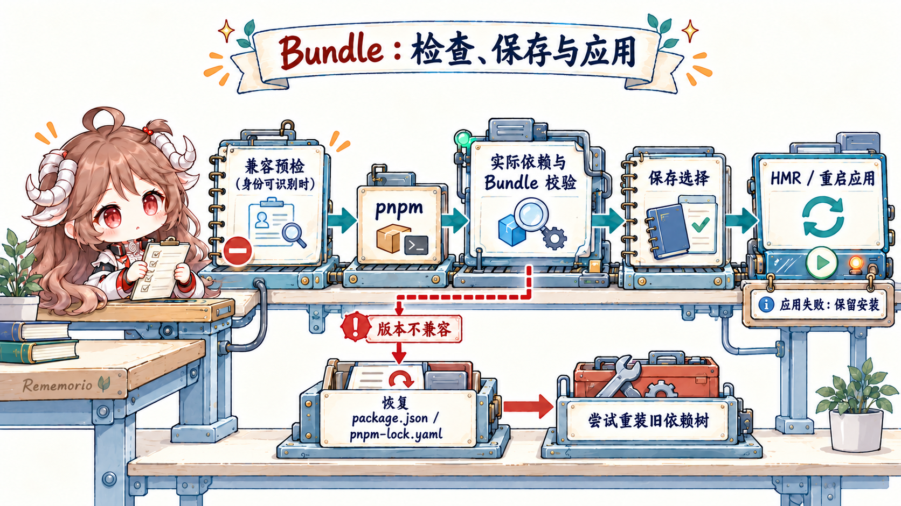
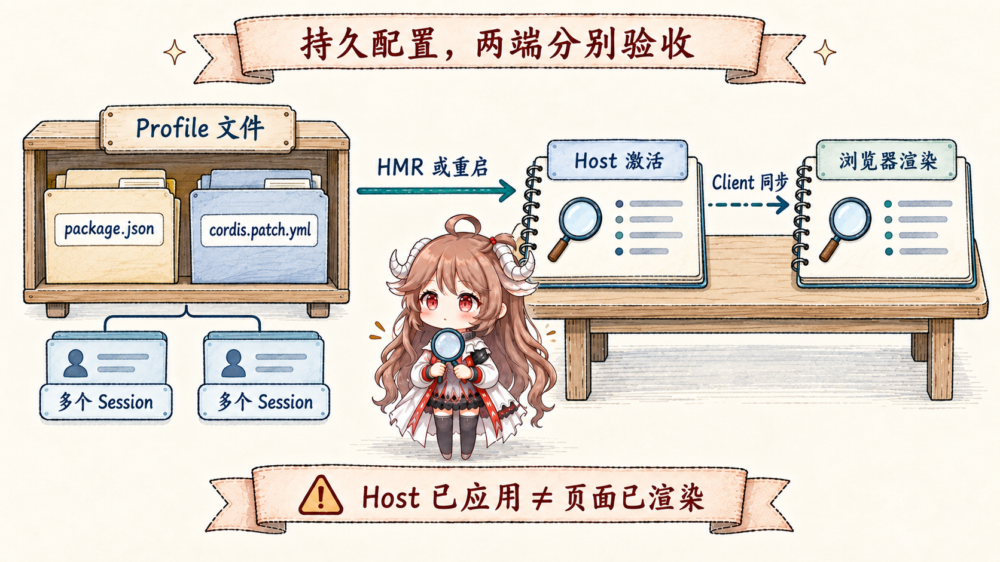

设想你要给 DSH 页面加一个团队状态面板。Agent 必须先知道哪里可以放 UI、哪些 Service 能读取状态，再把代码包装成可安装的插件。真正困难的部分是安装后的责任：它影响哪几个会话，重启是否还在，配置保存后什么时候算可用，失败又保留了哪些文件。
阅读契约。本文跟随这一个面板从接口检查走到安装、启用和移除。读完后，你应能区分两个只读 Inspect 工具与 plugin_manager 的八种 action，说明 Bundle、profile 配置和运行中 Fiber 的关系，根据 changed 与 application 判断结果，并独立检查页面是否可用。
证据边界。本文固定于 687f282。当前 工具注册源码只提供 cordis_inspect_list 和 cordis_inspect_query；Creator 的持久变更经过 Plugin Manager。动态 Host/Client runner 的 define/run/stop/undefine 继续服务程序化调用者与浏览器控制。
一、先把真实接口读清楚，再写插件
1.1 Inspect 分层返回接口与配置契约
cordis_inspect_list 返回 Provider manifest。Host 目录包含 Service、Event、Config 和 Tool；Client 同步 Service、Event、Builtin、Slots 和 Theme 等目录。每个 Provider 声明只读 method 及输入输出 JSON Schema。面板作者应先选出目录中的真实名字，再请求精确签名。
cordis_inspect_query 的 platform、provider、method 来自目录。Host 查询在本地执行；Client 查询等待第一个有效页面回答。Gateway 已知没有在线 Client 时立即失败；发出请求后使用 Host runner 配置的超时，默认 10 秒。无效回答或页面错误会保留诊断，其他页面仍可在期限内回答。中途断线沿用原期限，重连后需要重新查询；取消会结束等待。
Host 的 Config.listConfigs 无 entry 时分页列出 live profile Loader 条目，包括 tree-qualified id、tree-local patchId、包名与 schema 状态；指定精确 entry 后返回该条目的 JSON Schema、可解析时的包目录以及 limitations。schema 状态区分 absent、unsupported、tree、inactive 等情况。查询取现有 schema，validator/transform 回调不执行；Agent preset 创建的独立运行树由其他入口观察。Host providers 在进程级挂载一次，各会话的 Inspect 工具读取同一目录。
仍以状态面板为例：先无参数浏览 Slots 的紧凑树，再给出精确 root 读取该 Slot 的完整要求。若 root 是 Factory，回答的是其身份、scope 与注册者，普通 Slot 的完整 props 则由对应 Slot 查询返回。然后查询面板依赖的 Service 和 Theme，才能确定数据读取与视觉容器。这些只读查询给出代码需要遵循的接口事实。
1.2 当前入口是普通 Bundle
Bundle 是带 dsh.bundle.patch 的包；该字段支持一份 YAML 路径或有序路径数组，各文件按顺序插入或覆盖 Loader 条目。它与进程内动态 Package 是两种对象。前者用普通文件和包依赖保存，后者由 runner 的内存 Registry 保存。当前 Creator 把 Inspect 与 Plugin Manager 放进同一个 Agent preset，因此可以检查运行接口、编写包，再安装到当前 profile。
下面是 Bundle 声明的最小示意，省略面板的 Host/Client 实现与 Client 打包元数据；它连接包与 Loader 配置，面板仍需 Host/Client 实现。
{
"name": "@example/status-panel",
"version": "1.0.0",
"type": "module",
"exports": { ".": "./index.js" },
"dsh": { "bundle": { "patch": "./cordis.patch.yml" } }
}- insert:
- id: status-panel
name: '@example/status-panel'安装器会校验包确实声明 Bundle 并解析 patch，通过后更新当前 profile 的选择列表；包依赖由前面的 pnpm 安装步骤写入。纯配置 Bundle 也可以只插入已有插件，例如 MCP 客户端；不必为每一次配置都生成新的 Host 执行代码。
二、管理操作跨会话保存，权限也随之扩大
2.1 八种 action 写入不同对象
plugin_manager把 Web 管理页使用的服务开放给 Agent。先通过列表取得精确标识，再选择插件开关、Bundle 管理或版本豁免：
| action | 对象与效果 | 保留的内容 |
|---|---|---|
list_plugins / list_bundles | 分页读取当前 profile 的插件或 Bundle，返回精确标识。 | 不改变配置；仍受同一工具权限检查。 |
set_plugin | 在 profile patch 的最后一个匹配 override 中修改 disabled，或新增 override。 | 保留其他配置字段与已安装包；继承层已满足开关时移除多余的仅 disabled 覆盖。 |
set_bundle | 改写有序的 dsh.profile.bundles；重新启用会追加到末尾。 | 禁用保留依赖；层次优先级可能变化。 |
install_bundle | 安装并验证 Bundle，默认随后启用。 | 安装成功而启用失败时保留依赖。 |
remove_bundle | 先取消选择、卸载运行贡献，再运行 pnpm remove。 | 失败时保留已完成步骤和剩余状态，不自动重新启用。 |
list_version_exemptions | 读取 profile 的精确版本豁免和解析 warning。 | 损坏记录不会掩盖其他有效记录。 |
set_version_exemption | 授权或撤销一个插件版本与 DSH 版本的精确配对，并重新评估运行条目。 | 授权需 acceptRisk: true；文件保存在独立的 compatibility.json。 |
例如临时关闭状态面板，应选择 set_bundle 并传 enabled: false，依赖包继续保留。若只关闭其中一个可寻址插件，则使用 set_plugin。管理器拒绝关闭自己的关键组件，也不会编辑 Agent preset 内部的组合；profile 修改影响使用该 profile 的所有会话。
2.2 单次调用授权和依赖脚本授权分开
工具在分派任何 action 前都要求 danger-full-access，或为这一次调用请求批准，连列表操作也不例外。较低权限下，ask 可以请求批准；never、拒绝、取消或没有审批通道都会阻止执行。单次批准不会改写整个 Session 的权限模式。
原因很具体：新 Host 插件在进程内运行，超出工作区沙箱；包安装还可能运行依赖脚本。若 pnpm 阻止脚本，失败结果中的 pendingBuilds 列出当前 profile 中仍待决定的包名，包括较早尝试留下的项。用户明确批准后，重试才能传 approvedBuilds。服务检查这些包名是否仍待决定；对话授权由调用者确认；保存的许可按 profile 中的包名生效，并可跨后续安装失败保留。
2.3 兼容性要求与豁免固定到版本
兼容性检查先看插件是否自有 engines.dsh：存在时只使用它；否则检查所有 @deepseek-ai/dsh 与 @deepseek-ai/dsh-* peer ranges 是否同时匹配当前 DSH 版本。peer 的 workspace:^、workspace:~ 和 workspace:* 表示当前运行时；未声明要求的包无此版本限制。拒绝原因包含插件版本、运行时版本和未满足的范围。
明确接受风险后，调用者可在 compatibility.json 为 @example/status-panel@1.0.0 与一个精确 DSH 版本授权。插件或 DSH 升级后需要重新评估该配对；授权只接受当前运行时，撤销可指向历史版本。结构损坏的文件在读取时产生 warning，写入会拒绝并要求先修复；有效文件中的无效记录可被跳过，其余记录继续生效。
profile 启动、重组及 preset 挂载都在 import 插件前预检。普通被拒绝条目在运行副本中禁用，group 保留可用的兄弟条目；可静态展开的原生 include 若引入被拒绝插件，则整条 include 被省略。源 patch 文件保留原内容。直接通过其他代码调用 ctx.plugin() 的挂载由调用者负责，检查覆盖的是这些配置入口。
三、安装完成、配置已保存、激活成功是三份事实

3.1 包操作与 HMR 使用不同的协调方式
CLI 和服务共享 profile 的 manifest 写锁，避免两次包或配置写入互相覆盖。pnpm 执行在 HMR 队列外；成功安装并通过 Bundle 验证后，配置应用才进入 runExclusive()。HMR 本身不拿包写锁。这样耗时下载不会堵住所有源码刷新，配置应用仍与自动 reload 串行。
安装失败、取消或装到非 Bundle 时，管理器恢复开始前的 package.json 与 pnpm-lock.yaml；下载到 node_modules 或 pnpm store 的文件可以留下，记录脚本决定的 pnpm-workspace.yaml 也不被恢复。安装已成功、后续启用失败，则保留依赖与已保存选择，返回失败供修复。
安装还有前后两次兼容性检查：可先识别的 registry 或本地包在 pnpm 前读取 manifest；Git、tarball 等身份未确定的输入留到安装后检查。pnpm 成功后检查实际依赖及 Bundle 组件；本次变动触及的不兼容包会导致恢复两份清单，再尝试按原 lockfile 重装依赖树。没有旧 lockfile 时按原 manifest 重装。若修复安装失败，结果明确报告 node_modules 仍需修复；已经执行的授权脚本效果可能保留。未变动的不兼容依赖只产生 warning。
挂载 HMR 时，已知名称的已安装包会在 pnpm 前返回 already-installed；管理升级采用先 remove、后 install，让旧插件先卸载。安装前无法识别包名的输入可能到 pnpm 后才发现替换，此时进入包文件刷新。registry 回退按配置顺序尝试，只对归因到 registry 的可重试失败继续；返回值保留尝试列表、实际版本与失败阶段。
服务/Web 以 requestId 跟踪 installing、cancelling、applying。waitForInstall() 可等待仍活跃请求的最终结果；已结束结果不保留，返回 null 时需要查询当前状态。cancelInstall() 等 Git 检查或 pnpm 退出、文件恢复后返回 cancelled，进入 applying 后返回 too-late。进程控制会终止并等待整棵子进程树；服务默认 10 分钟输出空闲超时，新操作发现记录中的进程仍活跃时最多等待 5 秒，仍未退出就拒绝启动 pnpm。当前 Agent action 列表没有 wait 或 cancel。
3.2 结果必须同时读取 changed 和 application
ChangeResult把磁盘状态和运行结果分开。changed 比较 profile 文件是否变化；application 可以是 applied、restart-required、overridden、failed 或 cancelled。重复启用可能 changed 为 false 却已有效；配置保存成功也可能 changed 为 true 而应用失败。
{
"stage": "enable",
"target": "@example/status-panel",
"changed": true,
"application": "restart-required",
"restartReason": "no-hmr",
"enabled": true
}这个结果表示配置已保存、当前 profile 未挂载 HMR，需要重启。HMR 可以刷新同目录中变化的包文件；涉及 package-moved、host-module、unmanaged-plugin 或 module-comparison 时，restartReason 说明剩余原因。工具还为非 applied 结果附加 nextStep。更高优先级的 home 或启动覆盖抵消开关时返回 overridden。
应用过程等待移除插件的清理和 Loader 结算。默认把缺少 Service 的 PENDING 作为 warning；安装后选择的 Bundle 会显式要求其条目启动，目标仍 inactive 就返回失败。包刷新先停止旧实现再加载当前文件；导入或激活失败时保留 inactive，修复后重组重试。源码观察器的候选缓存恢复机制见第二篇，两种路径的失败结果各自检查。
四、分别验收 Host 激活与浏览器面板

4.1 验收跟随读者能看见的结果
管理返回值描述 Host 激活；浏览器同步失败另见 Settings 的插件列表。对状态面板，应再确认 Client 已同步、正确 Slot 中确有面板、所需 Service 可用，以及禁用后事件监听和 UI 注册会消失。浏览器验收记录实际渲染结果。
这也解释了持久化带来的成本。重启会重新按 profile 文件装配，多个 Session 可以同时受到新插件影响。需要回退时，禁用 Bundle、修复配置、移除依赖分别处理不同对象；移除必须先卸掉运行贡献才可删包，失败时不会倒走所有步骤。这比临时 eval 多了文件、依赖和发布责任，但留下了可重现的装配来源。
4.2 动态 runner 保留程序化生命周期
Host runner与 Client runner 仍保留 define、run、stop、undefine 的程序化生命周期。它们保存 Session 所有的不可变 Package、current/next 版本指针与 Run 身份；Host-only 直接启动，带 Client 的定义仍经过浏览器批准并按 Host → Client 加载。stop 保留定义，undefine 删除定义，进程重启清空这些内存对象。
这些调用者可用于研究 Cordis effect 回收、异步激活与 JSON RPC。Host runner 中的 node:vm 暴露实际服务引用，执行者需信任传入代码；同步超时只约束同步执行阶段。当前模型通过两个 Inspect 工具读取接口，通过 Plugin Manager 保存扩展。
五、把“扩展了自身”变成可验收的结论
- 接口事实先于代码：从只读目录取精确接口契约。
- 文件状态与运行状态分开：Bundle 安装、profile 选择、Host 激活与浏览器渲染各有检查点。
- 跨会话变更按 profile 管理：权限检查和脚本授权必须覆盖实际的进程内执行与持久文件。
- 失败后依据剩余事实修复：安装可恢复两份清单，启用失败保留安装，移除失败保留已完成步骤。
- 按调用入口解释能力：模型读取 Inspect 并管理 Bundle；程序化调用者控制动态 runner。
七篇路线最终回到相同问题：谁拥有状态，何时可以执行，失败后留下什么。当前 DSH 用只读 Inspect 让 Agent 理解运行接口，再用持久 Bundle 和 Plugin Manager 改变后续装配。是否真正完成扩展，要由保存结果、激活诊断与用户可见行为共同回答。